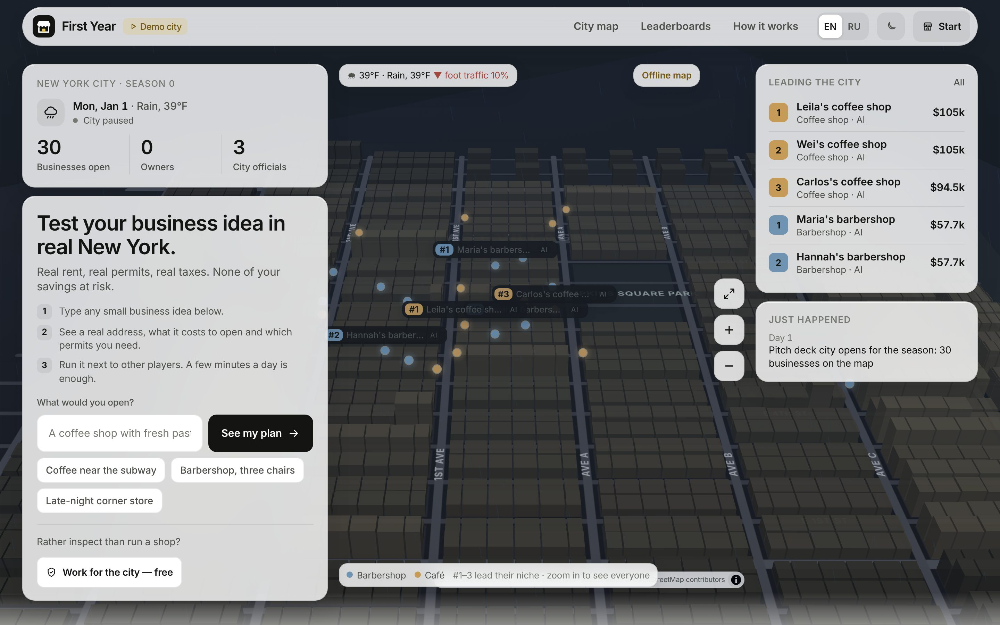
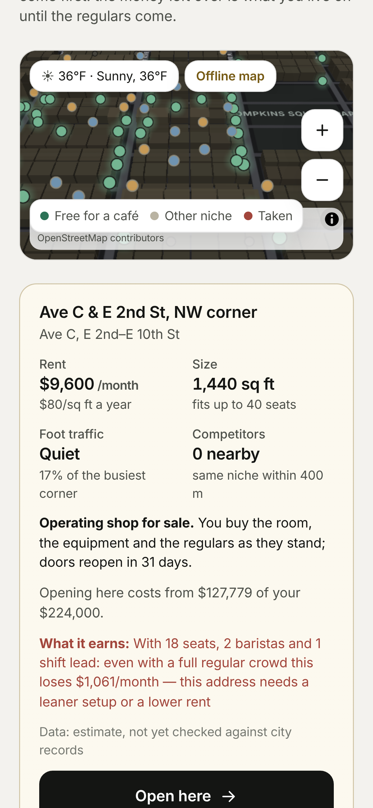
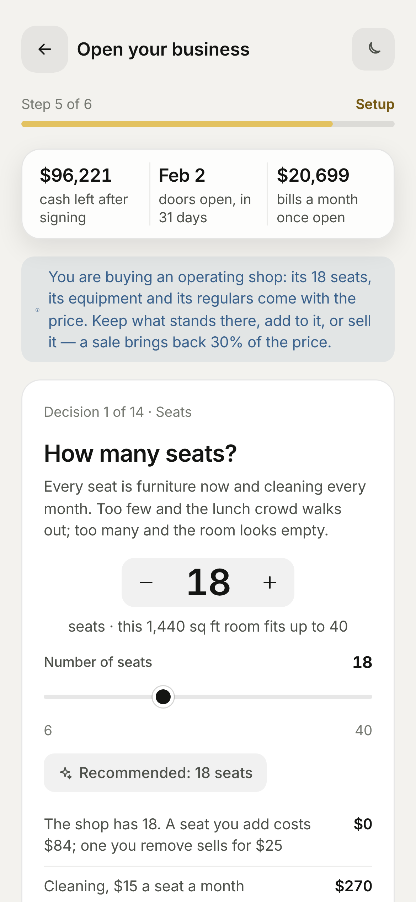
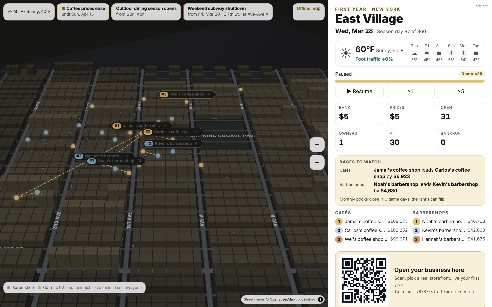
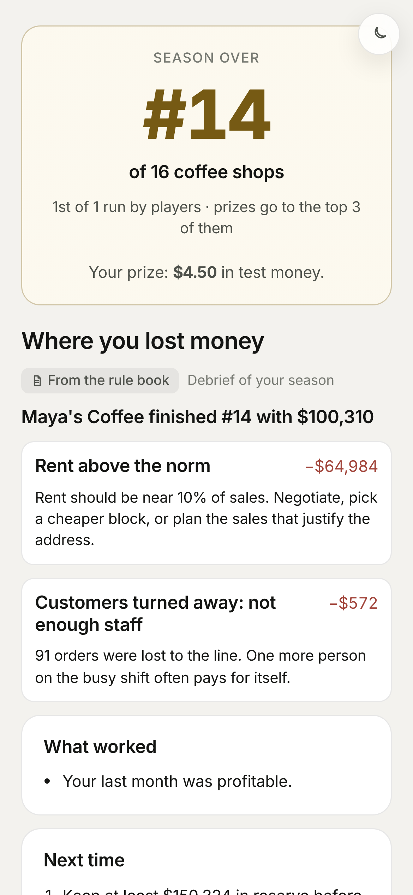
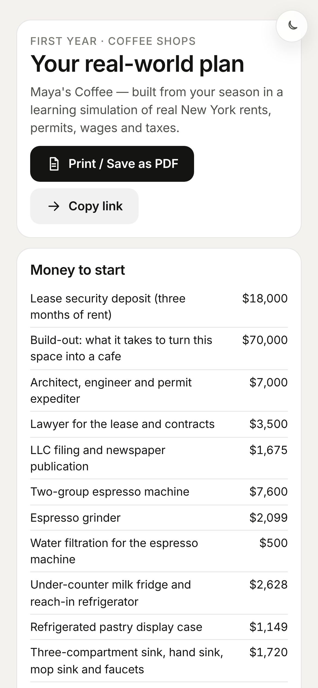
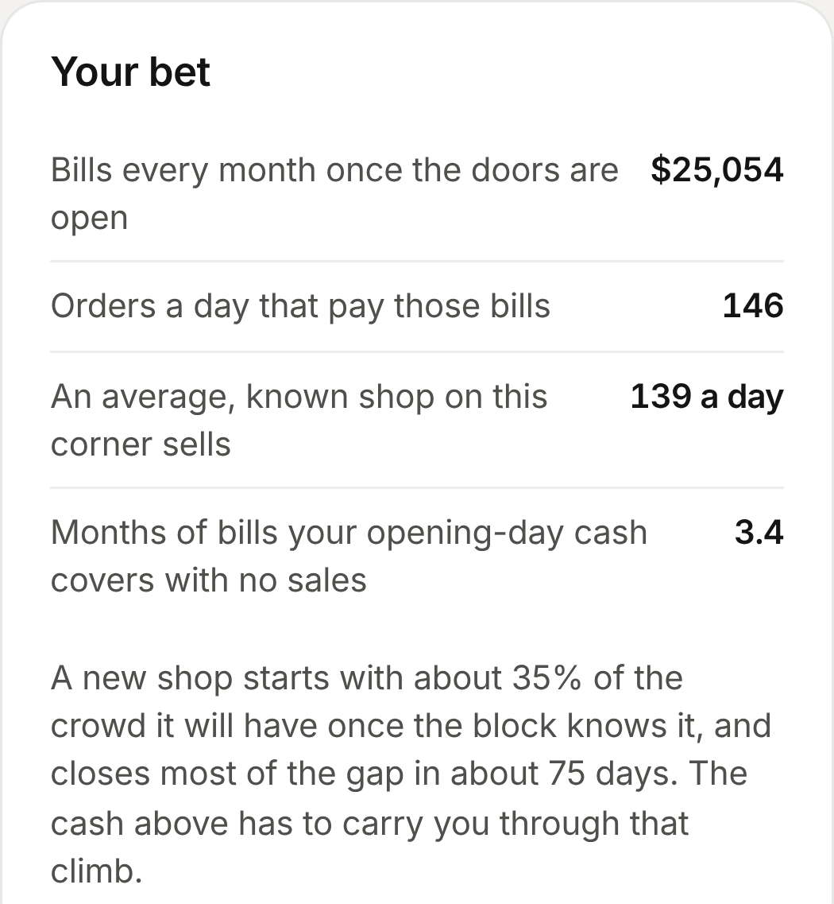
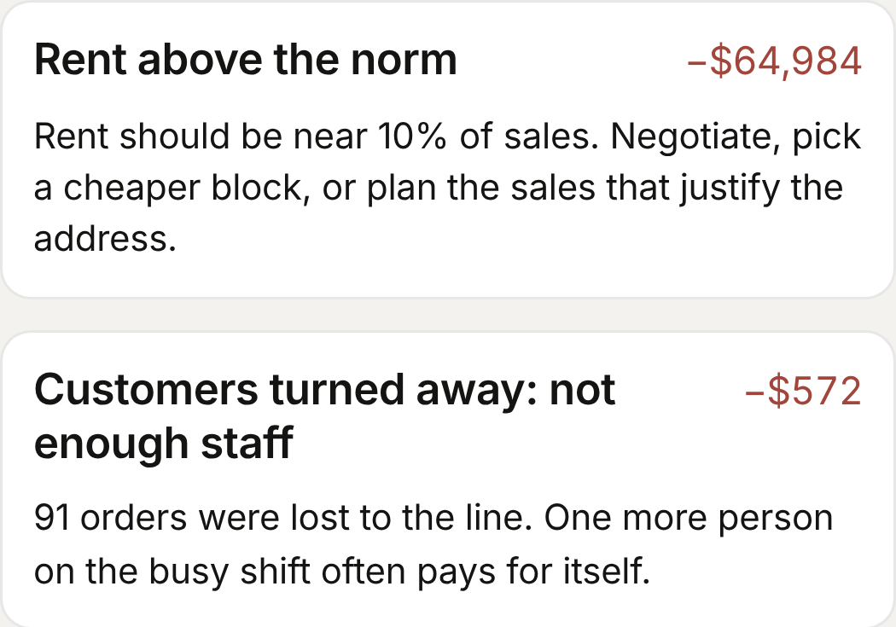

First Year
Would you risk your family’s savings on a coffee shop?
Live the first year of your own coffee shop on real New York rent, permits, wages and taxes — before you sign a lease. Leave with a plan that is yours.
Live the first year of your own coffee shop on real New York rent, permits, wages and taxes — before you sign a lease. Leave with a plan that is yours.

“It was pure economics: rents, expenses. We just can’t afford it.”Dandy Espresso, Madison Ave — closed five months after opening. DNAinfo, 2014
“After six months and spending thousands of dollars… we are still waiting for clearance to open up.”Café owner, 75 Second Ave, East Village — closed before opening. EV Grieve, 2022
No owner in these stories was ruined by bad coffee. Rent, wages, debt, permits — all visible only from inside the year. Sources and ten quotes: docs/pitch/USER.md





Residents run by the computer are labelled AI. People can take the inspector’s role.
Every input is an Action. The same code runs on the server and in the browser. No dice: an event is announced in advance or follows from a decision.
Rent, wages, permits, taxes, equipment. Each carries a source and is marked verified or estimate. The validator rejects a pack without them.
Demand comes from foot traffic; cafés within 250 m share it. With six rivals the first café drops from 6,865 to 4,941 orders a month.
Check it yourself: npm test · node scripts/smoke.mjs · npx tsx sim/audit/saturation.ts

The city, your storefront, the opening plan, your first month open; moves with neighbours, always.
Your decisions for the rest of the year, your plan with official links, the advisor, every business type.
A game month passes every real day: a report, a neighbour’s move, a decision. A year takes twelve days. Then try another block.



“You need 146 orders a day. A known shop here sells 150 — and you start with half of its crowd.”

“Away 14 days: cash +$14,943. A neighbour offers a joint deal. Decide today.”
“Our café’s rent ran $61,977 above the norm in year one. We learned it in a game.”

Players share these moments: the plan has a link, the city a QR. Ads only test them; none has run. Assumed: B16 of free players pay.
? payers · ? ARR
Sourced numbers; running today.
? payers · ? ARR
Same engine; the barbershop runs on it.
? payers · ? ARR
A city is a new data pack.
Ads alone return ?, so they only test messages: the model takes 90% of payers from links players share (assumption). Each step: ? of its pool pays; $100M needs ?. All numbers: node docs/pitch/model.mjs. Our own conversion is not measured yet.
| What people use today | Price | What is missing |
|---|---|---|
| Café tycoon games | $5–$20 | Invented economy: no real rent, no permits, no laws |
| Courses, city workshops | free–$80 | Lectures, not practice; not your block |
| Plan templates, Excel | $20/mo, $99+ | Your own guesses in; no time, no consequences |
| ChatGPT | $20/mo | Plausible numbers without sources; does not live the year |
| Consultant | $3,000–$15,000+ | Expensive before the lease; decides for you |
| First Year | $19/mo | Live the year on sourced NYC numbers, with neighbours; keep your plan |
No first-year simulator for future owners found (search, 14 Nov 2026). Sources: docs/pitch/COMPETITORS.md